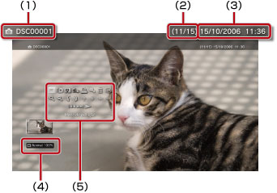

Foto > Utilizando o painel de controle
Utilizando o painel de controle
Realize várias operações utilizando o painel de controle na tela. O painel de controle pode ser exibido ou ocultado pressionando o botão  .
.
Modo de exibição

Altera o tamanho da imagem exibida na tela.
| Normal | Selecione para que a exibição da imagem se ajuste com o tamanho da tela sem alterar suas proporções. |
|---|---|
| Zoom | Selecione para exibir a imagem em tela cheia sem alterar suas proporções. Partes da imagem nas áreas superior e inferior ou esquerda e direita são cortadas. |
Dica
Dependendo do arquivo de imagem, pode não ser possível alterar o modo de exibição.
Alterar efeito
Altera o método de troca de imagens.
| Normal | Selecione para substituir a imagem exibida atualmente pela próxima imagem. |
|---|---|
| Slide | Selecione para substituir a imagem exibida atualmente pela próxima imagem em um formato de apresentação de slides. |
| Dissipar | Selecione para utilizar o efeito de dissipação ao trocar para a próxima imagem. |
Recortar
Exclua as partes desnecessárias do lado superior, inferior, esquerdo ou direito de uma imagem. Utilize os controles esquerdo e direito do controle sem fio para selecionar a área que você deseja manter. Utilize o controle esquerdo para rolar em qualquer direção e utilize o controle direito aumentar ou diminuir o zoom. As imagens cortadas são gravadas utilizando um nome de arquivo diferente.
Dica
Somente imagens armazenadas no armazenamento do sistema PS3™ podem ser aparadas.
Adicionar à lista de reprodução
Adiciona uma imagem a uma lista de reprodução.
Dica
Apenas as imagens salvas no armazenamento do sistema podem ser adicionadas a uma lista de reprodução.
Imprimir
Imprime uma imagem utilizando uma impressora.
Dica
Para imprimir, primeiro você deve configurar a impressora em [Seleção de impressora] em  (Configurações) >
(Configurações) >  (Configurações de impressora).
(Configurações de impressora).
Definir como papel de parede
Define a imagem exibida na tela como papel de parede. A imagem é definida exatamente como aparece na tela, seja aumentada, reduzida ou girada.
Dicas
- Quando o papel de parede não for utilizado, ajuste a configuração em (Configurações) >
 (Configurações de tema) > [Fundo de tela].
(Configurações de tema) > [Fundo de tela]. - Apenas uma imagem por vez pode ser definida como papel de parede. Se outra imagem for selecionada, a imagem atual será substituída.
Excluir
Exclui imagens.
Dica
Apenas as imagens salvas no armazenamento do sistema podem ser excluídas.
Mostrar
Exibe informações sobre uma imagem. A cada vez que você pressionar o botão  , a tela alternará entre as informações Exif, a tela com uma barra de informações e a tela sem informações adicionais.
, a tela alternará entre as informações Exif, a tela com uma barra de informações e a tela sem informações adicionais.
Tela com uma barra de informações

(1) |
Nome da imagem |
|---|---|
(2) |
Número da imagem / número total de imagens |
(3) |
Data e hora da gravação |
(4) |
Ícone de status |
(5) |
Painel de controle |
Mais zoom / Menos zoom

Aumente ou diminua o zoom para aumentar ou reduzir uma imagem. Utilize o controle esquerdo do controle sem fio para rolar em qualquer direção e utilize o controle direito para aumentar ou diminuir o zoom.
Girar para a esquerda / Girar para a direita
Gira a imagem em 90 graus para a esquerda ou para a direita.
Para cima / Para baixo / Esquerdo / Direito
Mova a imagem para exibir qualquer parte oculta, como quando (Modo de exibição) estiver definido como [Zoom].
Anterior / Próximo
Exibe a imagem anterior ou a próxima imagem.
Apresentação de slides
Exibe automaticamente cada imagem em sequência.